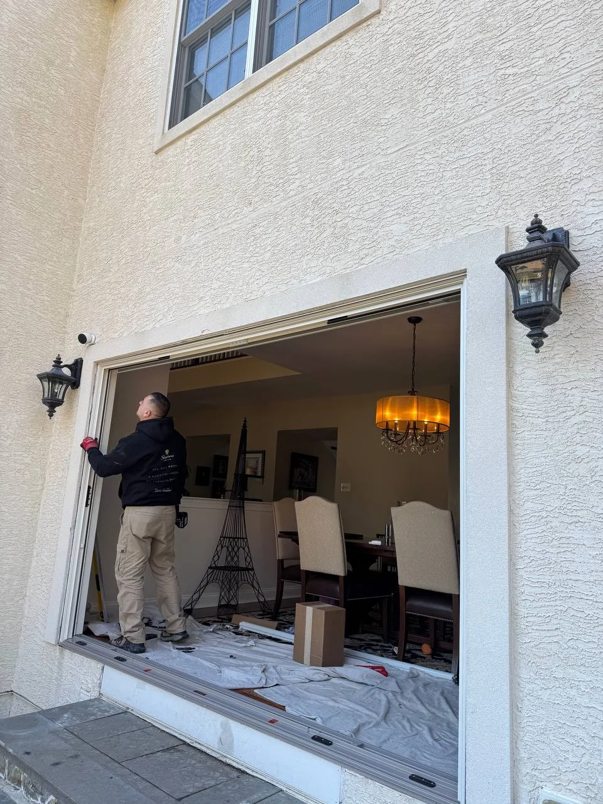

About Comrade Services
Ten years of hands-on installation experience.
Comrade Services is a Southampton-based window and door installation company with two crews and five installers serving homeowners across the region.
Work With Us
What Matters
Do the installation correctly. Finish it cleanly.
Every project is overseen by the business owner. The focus is straightforward: accurate measurements, correct installation, proper sealing, clean trim work and a job site that is respected from start to finish.
10+Years Experience
2Crews
5Installers
2-YearLabor Warranty
What We Handle
Complete installation, inside and out.
Window & door orderingRemoval &
disposalInsulationFlashing & weatherproofingExterior
caulkingAluminum cappingExterior trimInterior
casingSill repairRot repairDrywall / paint
touch-upsCleanup